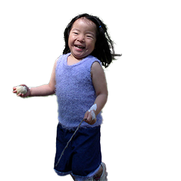
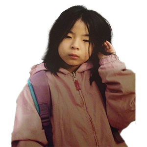
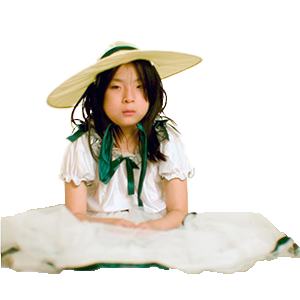
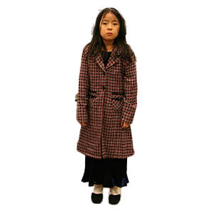
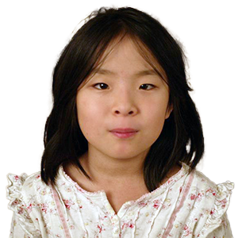
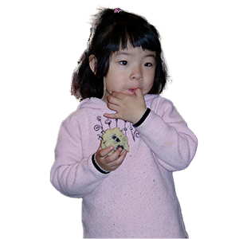
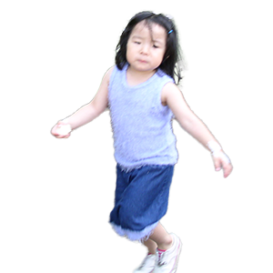
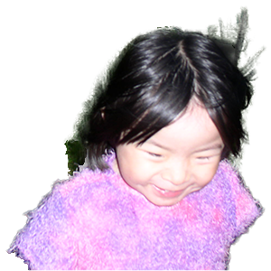
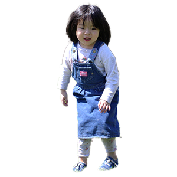
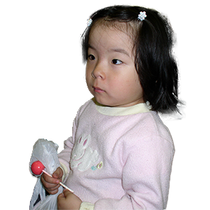

HOME
WRITINGS
BACK
There’s a child inside me crying. What can I do for her when I can’t speak?
I can only create, so I gather raw materials and construct a space for her.
She’s ecstatic to see all these drawings, paintings, sculptures, photographs, etc., are for her.
She particularly likes my collages and watching me connect and intersect her accumulation of stories and experiences.
She’s a complex child, but it’s okay.
I enjoy making layers for her.
When she’s happy, I create a space where she can freely play with things that bring her joy.
When she’s sad, I create a space where she can cry and speak out about her woes.
When she’s mad, I create a space where she can curse as aggressively as she wants.
It’s mutual.
From my art, she gets healing. Through her, I gain my voice. When she gets her expressiveness back, I get my pride back.
My art practice's whole point is advocating for my younger self.
She and I deserve it.









